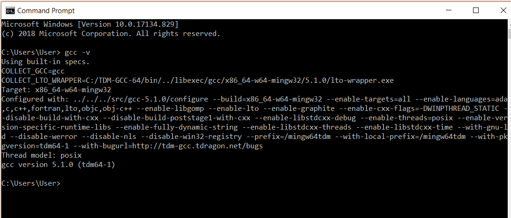
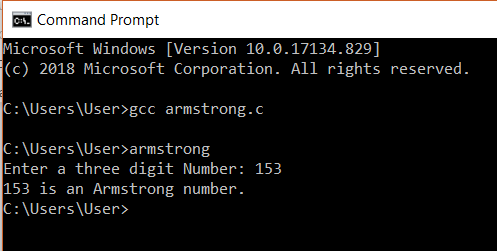

STEP 1:
Run the command ‘gcc -v’ to check if you have a compiler installed. If not you need to download a gcc compiler and install it. You can search for cmd in your windows system to open the command prompt.

STEP 2:
Create a c program and store it in your system. I have written a program to find the Armstrong Number and store it in the directory user. We would be using following code.
#include stdio.h
int main()
{
int num, original, rem, sum = 0;
printf("Enter a three digit Number: ");
scanf("%d", &num);
original = num;
while (original != 0)
{
rem = original%10;
sum =sum + rem*rem*rem;
original =original/ 10;
}
if(sum == num)
printf("%d is an Armstrong number.",num);
else
printf("%d is not an Armstrong number.",num);
return 0;
}
STEP 3:
Change the working directory to where you have your C program. You can do that by using the command ‘cd’, which changes the directory. We need to pass the name of the directory in which the program is stored.
Example: >cd Desktop
Our program is already in the user directory so, we don’t need to change it.
STEP 4:
The next step is to compile the program. To do this we need to use the command gcc followed by the name of the program we are going to execute. In our case, we will use Armstrong.c.

After this, an executable file will be created in the directory that your c file exists in. Eg: Armstrong.exe
STEP 5:
In the next step, we can run the program. This is done by simply giving the name of the executable file without any extension. On giving this we will get an output. Here, our Armstrong code is executed and we got output for this code.